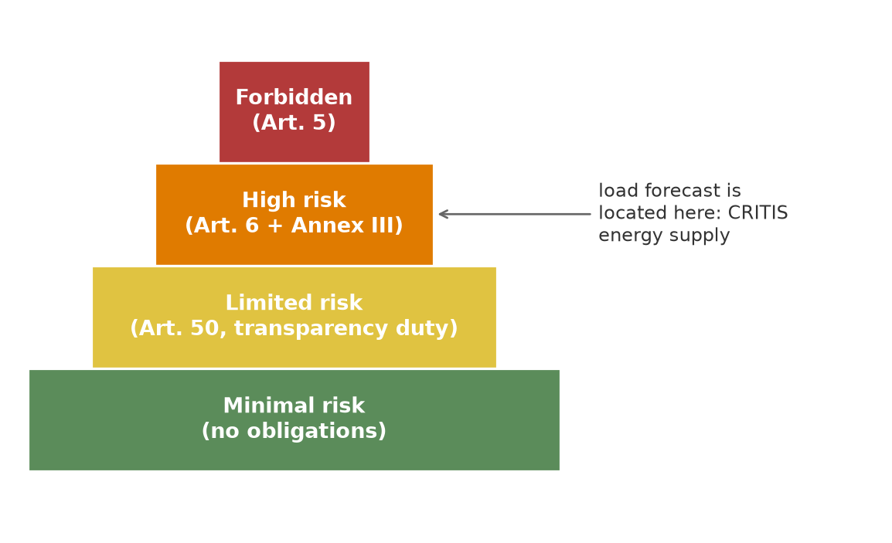

Safety-Critical Time-Series Forecasting with spotforecast2-safe
Lecture notes for students with no prior knowledge of AI regulation
Preface
These lecture notes accompany a course on safety-critical time-series forecasting with the open-source package spotforecast2-safe. They are aimed at students with no prior knowledge of AI regulation and no deep experience with time-series analysis. Anyone who can say at the end of the course why the EU AI Regulation (European Parliament and Council 2024) exists, which four code rules a safety-critical library must obey, and what a complete load-forecasting pipeline built on real ENTSO-E and Open-Meteo data looks like, has reached the learning goal.
A story to start with
Imagine a transmission system operator scheduling a delivery of 65 gigawatts of electric power into the German grid for 08:00 tomorrow. The number 65 comes out of a software system that computed a machine-learning load forecast. The real load at 08:00 is 72 gigawatts. Seven gigawatts short — and in a fraction of a second it is decided whether the lights go out in a major Central-German city.
The story is invented, the risk is not. Software that prepares decisions inside critical infrastructure can have physical consequences from a silent failure that no single human can stop once the dispatch has been issued. It is precisely this concern that drove the European legislator to adopt a regulation on artificial intelligence (Regulation (EU) 2024/1689, abbreviated AI Act or EU AI Act) which sets binding requirements for high-risk AI systems: data governance, technical documentation, record-keeping, transparency, human oversight, as well as accuracy and robustness (Art. 9 to 15 AI Act).
The story also explains why this course is not pure statistics: a safety-critical forecasting library can no longer afford silent shortcuts. If data are missing, the system must halt and ask, not simply interpolate. If a training run is repeated, the result must remain bit-identical. If something can be logged, it is logged, because a supervisory authority may need to reconstruct years later who made which decision when.
Who is bound by the AI Act?
The AI Act classifies AI systems by risk (Art. 5 to 7). The pyramid below summarises the four levels: a narrow top of explicitly forbidden applications and a wide base of many systems with minimal risk:
The use case of this course — electric load forecasting for a grid operator — clearly lies in the second tier (high risk), because Annex III No. 2 of the AI Act explicitly lists systems for the management of critical infrastructure. The following chapters show how the obligations from Art. 9 to 15 of the AI Act can be fulfilled technically — not via additional prose documents, but via code that guarantees specific properties.
The four code rules (CR-1 to CR-4)
spotforecast2-safe operationalises the regulatory requirements through four non-negotiable code rules. They form the backbone of the entire course; every one of the ten chapters refers to at least one of them.
| Rule | Short form | What it is about | AI Act link |
|---|---|---|---|
| CR-1 | No dead code | Every function, class, branch is reached by a test or docstring example. | Art. 9, 13 |
| CR-2 | Determinism | Same input, bit-identical output. Fixed seeds, fixed iteration order. | Art. 12, 15 |
| CR-3 | Fail-safe processing | Invalid inputs (NaN, wrong dtype) raise an explicit exception instead of being silently imputed. | Art. 10, 15 |
| CR-4 | Minimal CVE attack surface | A short, versioned deny-list of forbidden dependencies, enforced by a test against the lockfile. | Art. 15 |
The detailed wording of the rules and their connection to the IEC 62443-4-1 norm can be found in the package’s companion report under Design principles. For this course the rules of thumb suffice:
- CR-1 ensures that every line of code that ever runs has also been checked at some point.
- CR-2 ensures that you can reproduce a result, even if you repeat it a year later.
- CR-3 ensures that the system never silently guesses but always asks back when something is missing.
- CR-4 ensures that the list of libraries your system depends on stays small — because each dependency is a potential entry point for security vulnerabilities.
In the ten chapters that follow, you will see how these rules translate into concrete safeguards — at the very moment when spotforecast2-safe does something that another library would just wave through.
Roadmap through the chapters
The lecture notes follow the order of the running example “electric load forecasting”: a complete load-forecasting pipeline for an ENTSO-E market zone, from data acquisition to reproducibility audit.
| Chapter | Content | Code rule | AI Act |
|---|---|---|---|
| 01 | Switch on the audit log | CR-1 | Art. 12 |
| 02 | Load live data from ENTSO-E | CR-2 | Art. 10 |
| 03 | Annotate data anomalies explicitly | CR-3 | Art. 10 |
| 04 | Handle data gaps explicitly | CR-3 | Art. 10 |
| 05 | Separate training and evaluation range | CR-2 | Art. 10 |
| 06 | Calendar features + real weather data | CR-3 | Art. 10 |
| 07 | Instantiate and train the forecaster | CR-2, CR-4 | Art. 9, 15 |
| 08 | Produce a 24-hour forecast | CR-1 | Art. 13 |
| 09 | Measure accuracy (MAE, RMSE, MAPE) | CR-2, CR-3 | Art. 15 |
| 10 | Rolling-origin backtest | CR-2 | Art. 9 |
| 11 | Provenance and reproducibility | CR-1 to CR-4 | Art. 11, 12 |
| 12 | Live challenge: forecasting energy consumption | CR-1 to CR-4 | Art. 10, 12, 13, 15 |
How to read these notes with Claude
Every chapter ends with an Exercises box. The exercises are phrased so that you can paste them directly into the AI assistant Claude (e.g. https://claude.ai or Claude Code in the terminal) to explore the source code of spotforecast2-safe on your own.
A typical exercise looks like this:
Ask Claude: “Show me the source code of
spotforecast2_safe.preprocessing.LinearlyInterpolateTS. Explain line by line how theon_missingparameter changes the behaviour. Write a Python example that compares all three permitted values (‘raise’, ‘ffill_bfill’, ‘passthrough’) on the same data snippet.”
We recommend really putting each exercise to Claude rather than googling the answer yourself. The learning effect comes from the dialogue in which you question Claude’s explanation, push back on an insufficient answer, ask for a concrete example, or probe for the connection to the AI Act or to one of the four code rules.
Preparing your environment
For the live-data chapters (02, 06) you need two things:
A free ENTSO-E Restful API key. You can request it at https://transparency.entsoe.eu/ after registering with a professional email address. Export it in your shell before rendering:
export ENTSOE_API_KEY="your-token-here"An active internet connection for Open-Meteo. Open-Meteo requires no key for the archive or forecast API.
The render command is:
cd lecture
QUARTO_PYTHON=$HOME/workspace/Lehre.d/ddmo-sose-26/.venv/bin/python3 quarto renderWhen you run this command a second time, the once-fetched ENTSO-E and weather data are served from _freeze/ and _cache/; a re-render then takes under thirty seconds. Any change to a chapter’s source invalidates only that chapter’s cache.
import os
if "ENTSOE_API_KEY" not in os.environ:
raise RuntimeError(
"Set ENTSOE_API_KEY in the shell before rendering chapter 02. "
"Request a key at: https://transparency.entsoe.eu/"
)
print("Environment looks good. You can now run `quarto render`.")
NoteDeterminism despite live data
Live APIs return time-dependent values. So that our pipeline can still satisfy the CR-2 condition of bit-identical reproducibility, we pin the endpoints of the time window under consideration in a single constant that is passed to all chapters:
DATA_START = "2024-01-01 00:00+00:00"
DATA_END = "2024-12-31 23:00+00:00"
COUNTRY = "DE"That way all students get identical data for an identical time window.